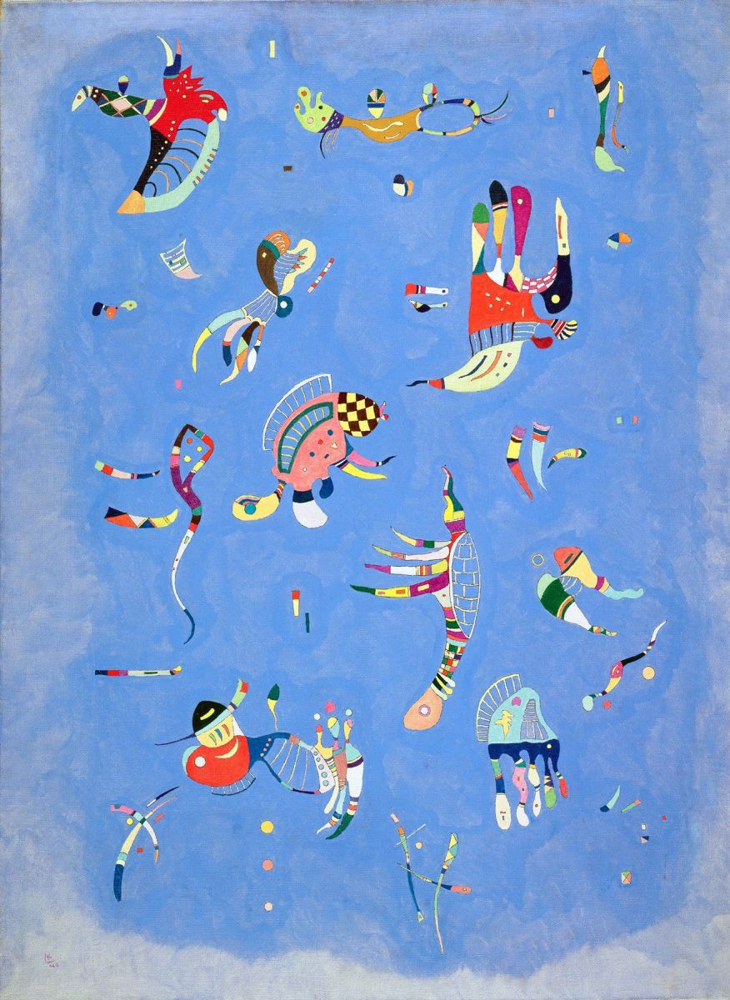

«Синее небо»
Описание
Исследователь творчества Кандинского Мишель Кониль-Лакост писал о полотне «Синее небо» так: «Графическая строгость на этой картине уступает барочной множественности мотивов, они выглядят так, словно потеряли всякую связь со структурой, которая была определяющей в пространстве и долгое время была понятной и заметной только художнику, а его единственным долгом было сделать ее видимой для всех остальных. Странные плавающие фигуры хочется назвать существами. Художник не делает ничего, чтобы смягчить этот причудливый, гротескный эффект. С другой стороны, чем более абсурдны эти фигуры, тем более очевидно его стремление проработать их в мельчайших деталях, тем более изысканны их формы, тем ярче цвета».
После закрытия Баухауза в 1933 году Кандинский перебирается в Париж. Здесь он проживет до самой смерти, поскольку после выставки «Дегенеративное искусство», устроенной нацистами в 1937 году и представившей около 50 его работ, вернуться в Германию художник уже не мог.
В последние годы жизни Кандинский, по мнению многих исследователей, снова возвращается к фигуративной живописи. Однако ее весьма сложно назвать таковой в традиционном смысле, это скорее некий ее синтез с абстрактным искусством. Картины художника приобретают немного шутливый, даже игривый тон. Кандинский начинает населять свои работы причудливыми «биоморфными» формами, то ли летящими, то ли плывущими по поверхности холста. Картина «Синее небо» - ярчайший представитель этого периода.
Существа, похожие одновременно на рыб и птиц и напоминающие животных с работ Хоана Миро, на первый взгляд хаотично разбросаны по синему фону. Но это обманчивое впечатление, ведь Кандинский по-прежнему придает огромное значение композиции. Загадочность природы этих существ усиливается и за счет неопределенности фона: несмотря на название картины, невозможно с полной уверенностью утверждать, что перед нами именно небо, а не морские волны.